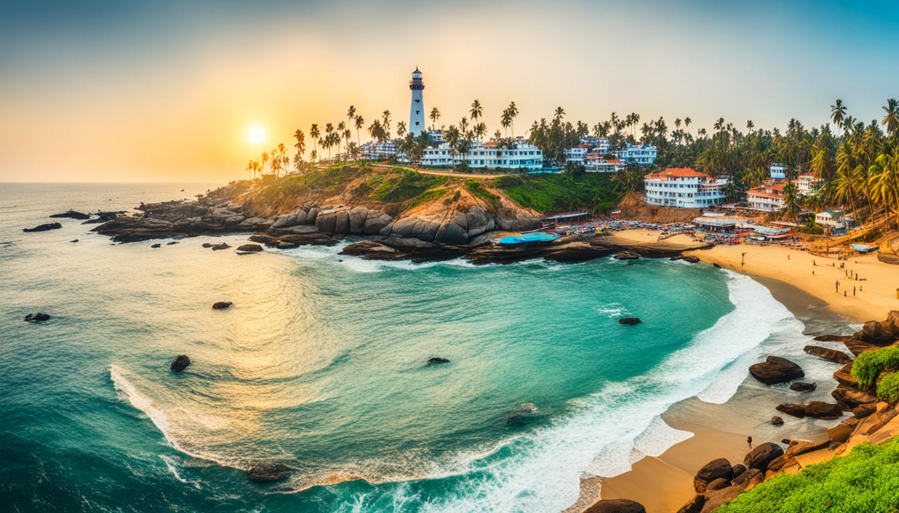

Top Destination
ALAPUZHA

Alappuzha, also known as Alleppey, is a scenic city in Kerala, India, renowned for its enchanting backwaters, houseboats, and lush landscapes. Often referred to as the "Venice of the East," it offers picturesque boat cruises on Vembanad Lake, famous for the Nehru Trophy Boat Race. Visitors can relax on beautiful beaches like Alappuzha Beach and Marari Beach while experiencing the region's rich cultural heritage through its temples and traditional cuisine, such as the renowned Palpayasam. With a tropical climate and excellent connectivity, Alappuzha is a popular destination for travelers seeking natural beauty and authentic Kerala experiences.
MUNNAR
.webp)
Munnar is a stunning hill station located in the Western Ghats of Kerala, India, known for its breathtaking landscapes, tea plantations, and pleasant climate. Situated at an altitude of approximately 1,600 meters (5,200 feet), it offers a cool respite from the tropical heat, making it a popular getaway for tourists. Munnar is famous for its sprawling tea gardens, which produce some of the finest teas in India, and visitors can explore these plantations while enjoying picturesque views of rolling hills and mist-covered mountains. The region is also home to several scenic spots, including the Anamudi Peak (the highest peak in South India), Mattupetty Dam, and Echo Point, where nature lovers can indulge in activities like trekking, boating, and bird watching. The rich biodiversity of Munnar includes a variety of flora and fauna, including the endangered Neelakurinji flower, which blooms once every twelve years. With its charming landscapes, pleasant weather, and vibrant culture, Munnar is a must-visit destination for nature enthusiasts and adventure seekers alike.
Kovalam
Kovalam is a renowned beach town located along the Arabian Sea in Kerala, India, famous for its picturesque beaches, vibrant nightlife, and scenic beauty. The town is known for its three main beaches: Lighthouse Beach, Hawah Beach, and Samudra Beach, each offering a unique atmosphere and stunning views. Lighthouse Beach, named after the historic lighthouse perched on a rocky promontory, is the most popular and features a lively atmosphere with numerous cafes, shops, and water sports activities. Kovalam is also famous for its Ayurvedic treatments and wellness resorts, attracting visitors seeking relaxation and rejuvenation. The beach town's charm lies in its blend of natural beauty and cultural experiences, making it a favorite destination for tourists seeking both adventure and tranquility. With its warm climate, stunning sunsets, and vibrant local markets, Kovalam provides a perfect escape for beach lovers and travelers looking to immerse themselves in Kerala's coastal culture.